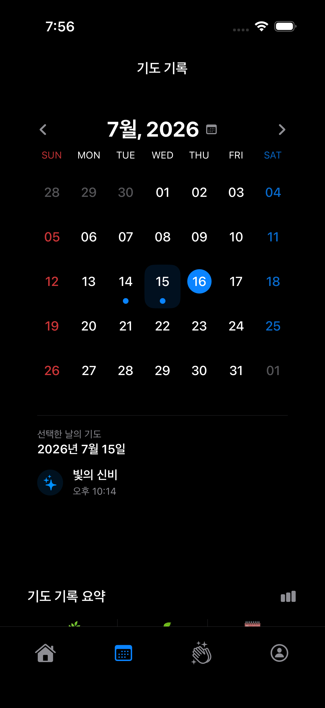
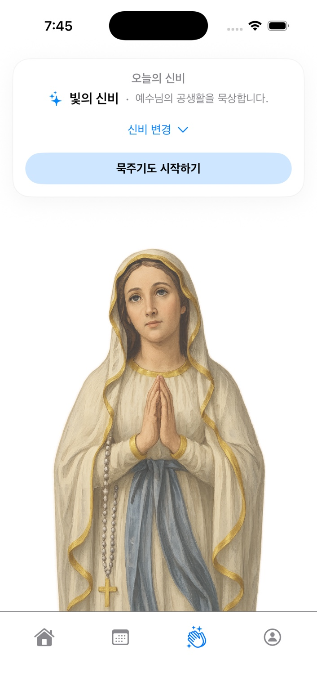
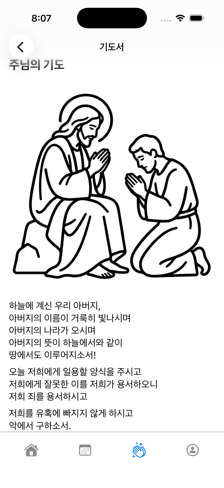

●
묵주기도
기도의 흐름을 따라
WITH MARY
Pray with peace. Grow in faith.
기도는 특별한 날이 아니라,
매일 이어지는 평화의 습관입니다.
“평화를 너희에게 남기고 간다. 내 평화를 너희에게 준다.”
요한 14,27



APP PREVIEW
손가락이나 마우스로 옆으로 넘겨 보세요.
누적 매일 이어가는 묵주기도
성모님과 함께 평화로운 기도 습관을 만들어보세요.
FEATURES
With Mary는 매일의 기도를 더 쉽고 깊게 만들어 줍니다.
신비를 선택하고 기도의 흐름을 따라가세요.
매일의 기도를 기록하고 통계를 확인하세요.
전통 기도문을 모아 언제든 함께 기도하세요.
중요한 소식을 빠르게 확인할 수 있어요.
소중한 기도 기록을 안전하게 보호합니다.
WITH MARY
성모님과 함께하는 매일의 묵주기도.
Download on theApp Store지금 App Store에서 다운로드하실 수 있습니다.